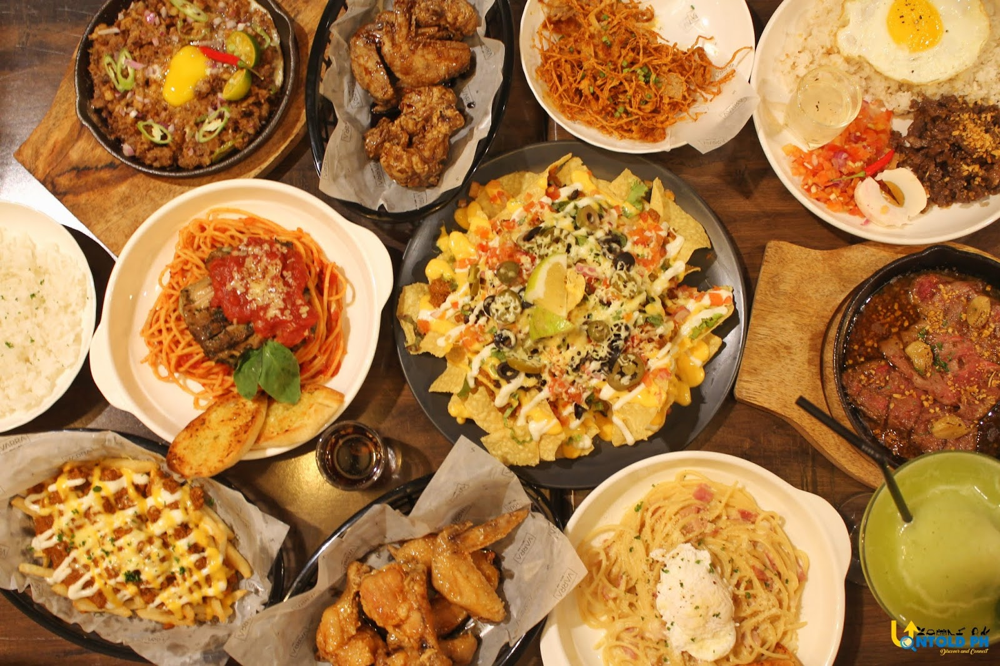
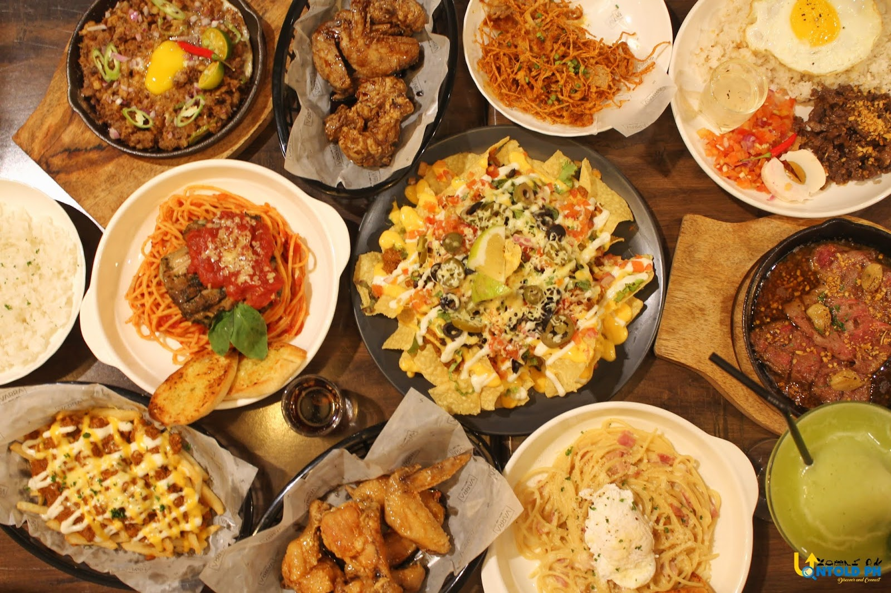

Patricia Fangonilo, known as Patty, is the proud owner of a successful restobar named "Patty's Point." The restobar is a unique concept that combines the sophistication of a restaurant with the lively ambiance of a bar. The restobar serves delicious food, handcrafted cocktails, and has a vibrant atmosphere that keeps customers coming back. Patty's journey to success was not an easy one. She faced numerous challenges in her life, from immigrating to the United States to learning English and working odd jobs to make ends meet. However, her tenacity and determination led her to her ultimate goal of opening a successful restobar.
Patty's Point became an instant hit in the community. The restobar's menu was carefully curated, with a focus on high-quality ingredients and bold flavors. Patty's love for cooking and her Italian roots inspired her to incorporate classic Italian dishes with a modern twist, which became a signature feature of the restobar.The restobar's ambiance was carefully designed to create a lively and inviting atmosphere. The decor featured warm lighting, cozy seating, and an open kitchen, allowing customers to see the chefs at work. The bar offered a wide range of handcrafted cocktails, along with an extensive wine list and an impressive selection of beers. As Patty's Point's popularity grew, Patty continued to refine the menu and the restobar's ambiance, ensuring that every customer had an exceptional experience. Her dedication and hard work paid off, and the restobar became a beloved institution in the community. Today, Patty is a well-respected member of the hospitality industry, known for her culinary expertise, warm personality, and unwavering commitment to excellence. Her success story is an inspiration to anyone who has ever had a dream and was willing to work hard to achieve it.
 
